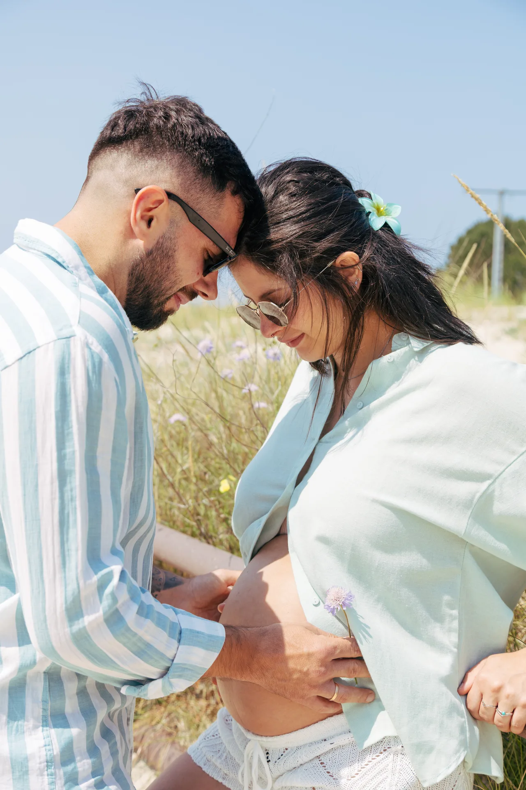
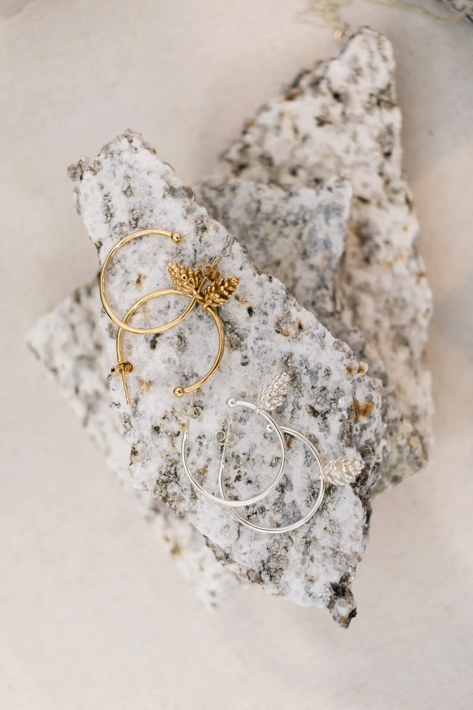
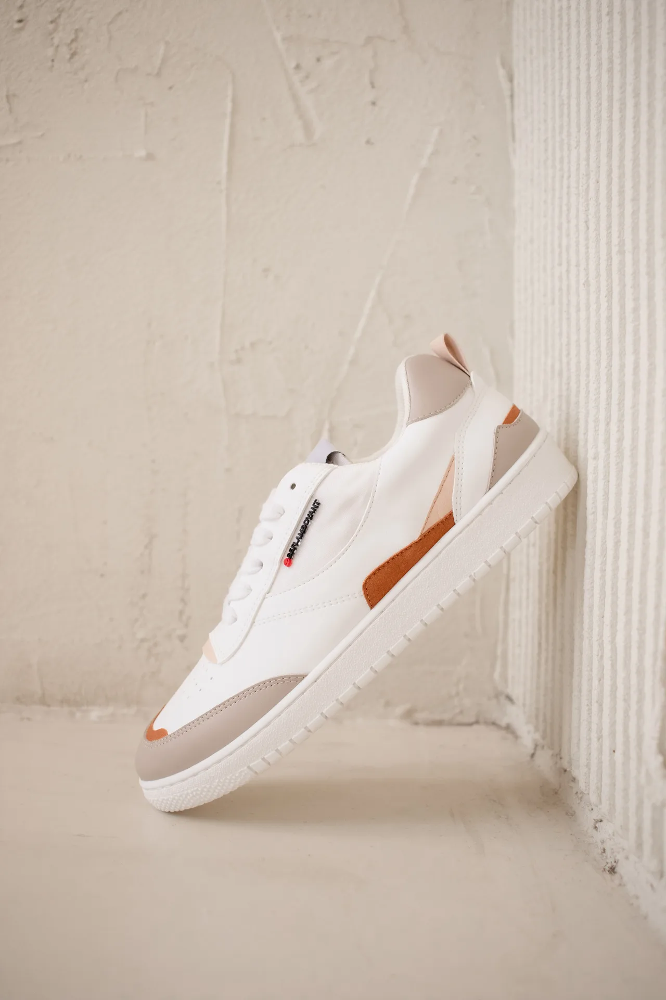
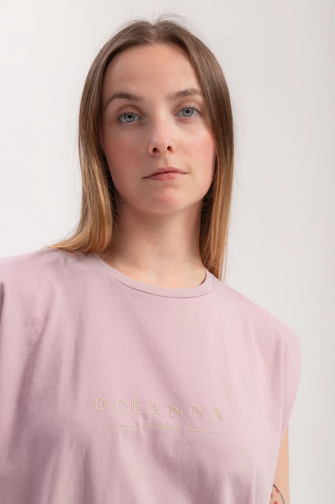
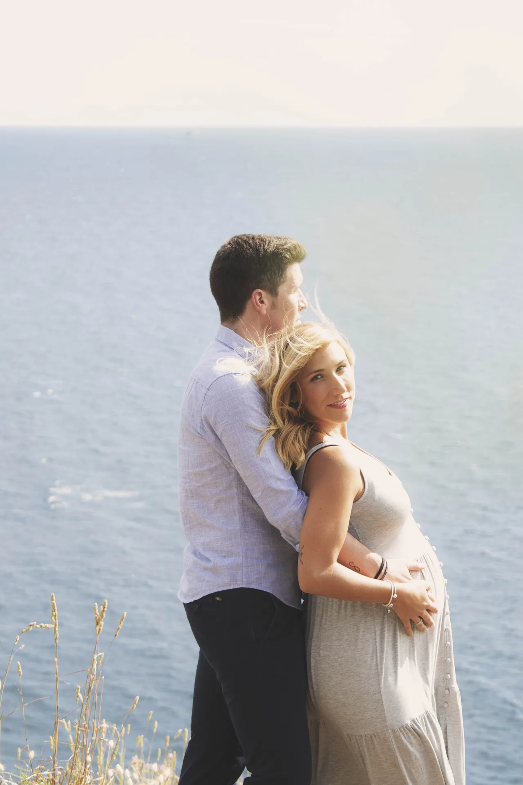
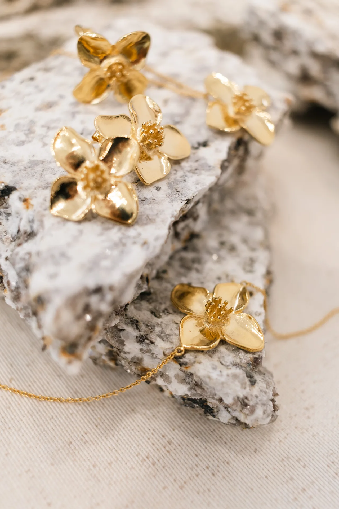
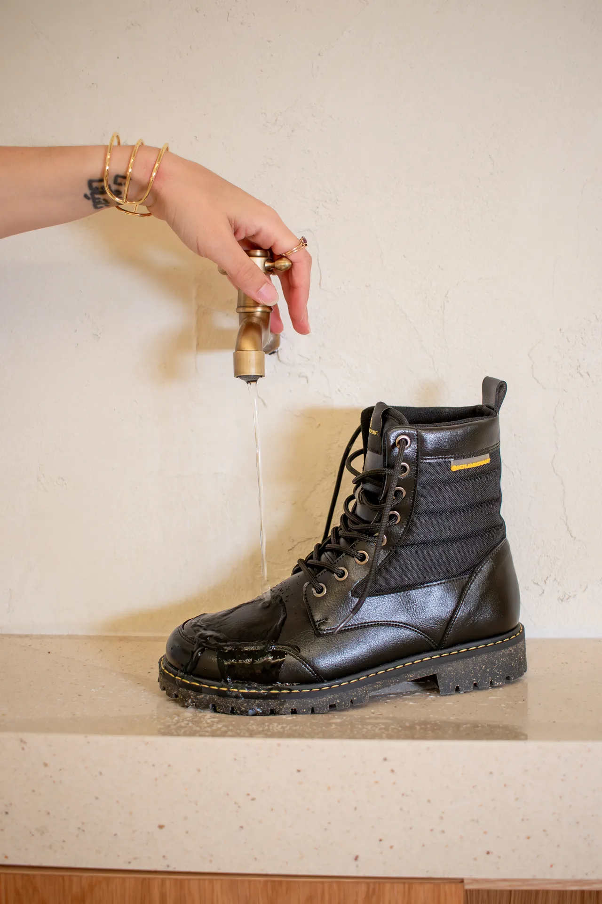

Estética atemporal
Momentos eternos, capturados con naturalidad.
Fotografía y dirección visual desde Galicia para marcas, retratos y maternidad con una estética serena, luminosa y memorable.




Selección
El arte de contar historias
Cada proyecto se construye desde la luz, el ritmo y los detalles. La idea no es producir imágenes bonitas sin más, sino crear una narrativa visual que permanezca.

Maternidad
Luz suave, presencia real
Sesiones que acompañan la calma del momento y dejan espacio para la emoción sin artificios.

Detalles
Gestos pequeños que sostienen la escena
Primeros planos, texturas y objetos que aportan silencio, respiración y carácter a la historia.

Marca
Imagen editorial para proyectos con identidad
Contenido pensado para web, redes y campañas que necesitan coherencia estética y dirección visual.
“La fotografía es el único lenguaje capaz de detener un gesto y dejarlo respirar.”
Una mirada editorial para escenas íntimas, marcas sensibles y momentos irrepetibles.
Dirección visual, fotografía y edición con una estética limpia.
Servicios exclusivos
Una experiencia cuidada de principio a fin
Dirección visual coherente
Definimos intención, referencias, estilismo y ritmo para que toda la sesión se sienta unificada.
Sesiones pensadas para marca y emoción
Trabajo con retrato, maternidad, contenido editorial y piezas visuales para marcas personales.
Entrega preparada para publicar
Recibes una selección final en alta calidad, optimizaciones para web, redes y usos editoriales sin perder la naturalidad.